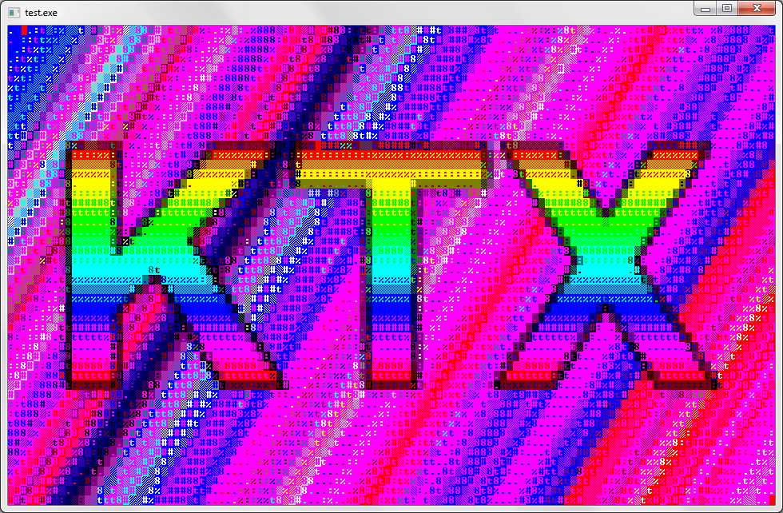
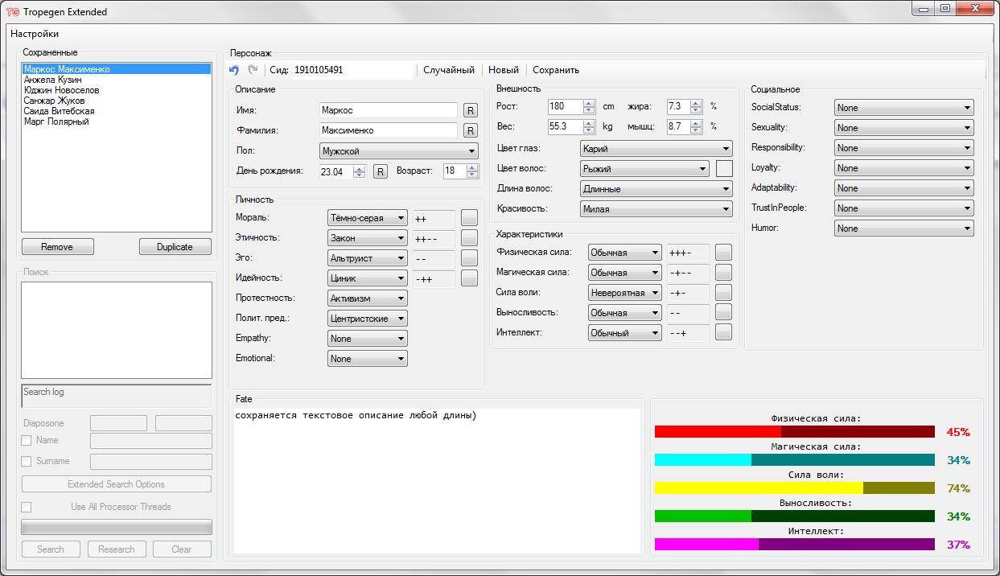
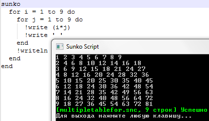

Список моих проектов
Biker Franchise
Прочие
KTX (30.12.2018 - support)
Первая серьезная попытка написать библиотеку, которая бы сильно помогала при разработке консольного интерфейса. Впрочем, впоследствии я сделал более серьёзную библиотеку KTXCore. Однако, в KTX всё ещё есть неоспоримо огромный плюс - возможность конвертации картинок в консольные символы. Когда-нибудь я сделаю простеньку оболочку для этой библиотеки. Когда-нибудь.

Tropegen (15.06.2021 - 22.06.2021)
Программа-генератор персонажей с возможностью редактирования их характеристик. Этакая утилита-помощник писателю. Возможность переключения между списками персонажами, автоматическое сохранение этих списков на жесткий диск.

Sunko (17.08.2019 - 09.12.2019)
Одна из нарастающих попыток написать свой язык. Лучше предыдущих, но хуже последующих реализаций. Лучшую реализацию смотрите Язык квестов Biker 3
